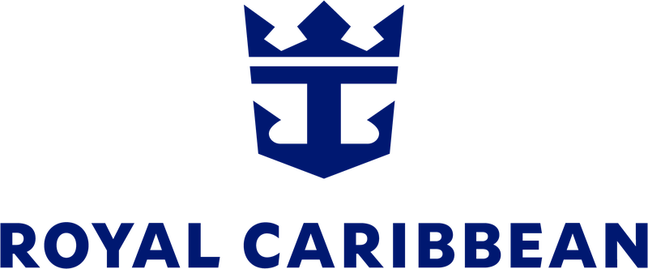
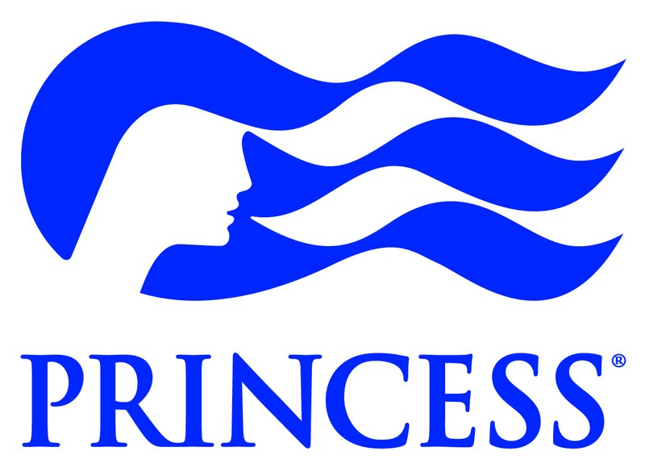
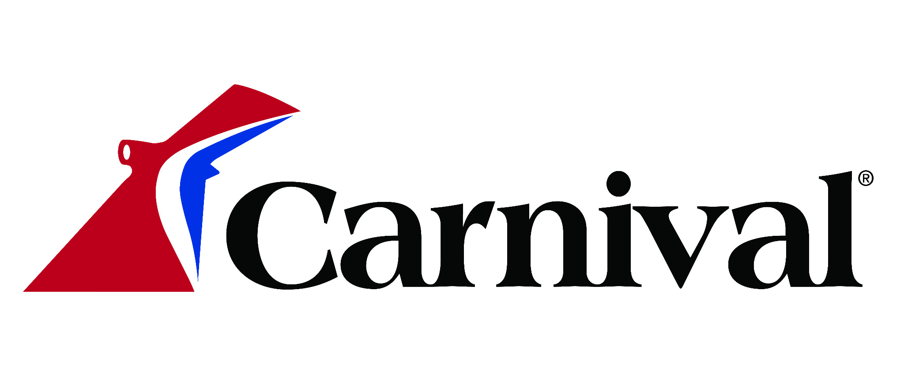
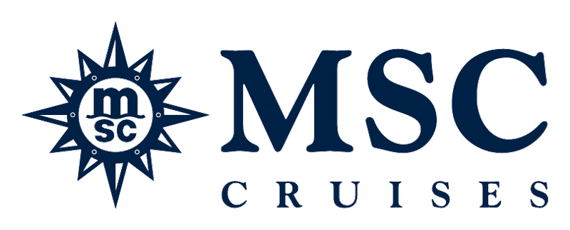

Caribbean & Bahamas
Warm beaches, turquoise waters and island destinations make the Caribbean and Bahamas a favorite for relaxing getaways and family vacations.
Explore Caribbean Cruises →CRUISE • DISCOVER • EXPLORE
From choosing the right cruise line and itinerary to finding the cabin that fits your needs, we'll help you sort through the options and plan a cruise you'll be excited about.
THE RIGHT SHIP. THE RIGHT ITINERARY. THE RIGHT FIT.
Every cruise vacation is different. We help you compare destinations, ships, staterooms and onboard experiences so your cruise fits the way you actually want to travel.
EXPLORE WHERE YOU CAN SAIL
From tropical beaches to glaciers, historic European cities and breathtaking fjords, cruising can take you to some of the world's most incredible destinations.
Warm beaches, turquoise waters and island destinations make the Caribbean and Bahamas a favorite for relaxing getaways and family vacations.
Explore Caribbean Cruises →Glaciers, wildlife and incredible scenery make Alaska one of cruising's most unforgettable destinations, with options to combine your cruise with a land tour.
Explore Alaska Cruises →Discover historic cities, beautiful coastlines and iconic destinations throughout Greece, Italy, Spain and beyond.
Explore Europe Cruises →Experience dramatic fjords, waterfalls, historic cities and unforgettable landscapes throughout Iceland and Northern Europe.
Explore Northern Europe →FIND YOUR CRUISE STYLE
Every cruise line offers a different experience. The right choice depends on who's traveling, what you enjoy doing, the destinations you want to visit and the type of vacation you're looking for. We'll help you compare the options and find the cruise line that fits you best.

Innovative ships, incredible entertainment and plenty to do onboard make Royal Caribbean a great choice for families, couples and multigenerational vacations.
Modern ships, elevated dining and thoughtfully designed spaces make Celebrity Cruises a great choice for couples and travelers looking for a more relaxed, upscale cruise experience.
Flexible dining, exciting entertainment and a relaxed approach to cruising make Norwegian a great choice for travelers who enjoy having plenty of options throughout their vacation.
Explore NCL Cruises
Destination-focused cruising, elegant ships and exceptional Alaska options make Princess a great choice for travelers who want to experience more of the places they visit.

Fun ships, casual cruising and plenty of onboard entertainment make Carnival a great choice for families, groups and travelers looking for a lively vacation at sea.

Stylish ships, international flair and a wide range of itineraries make MSC Cruises a great choice for travelers looking for a distinctive cruise experience with plenty of options onboard.
Adults-only cruising, modern ships, included dining and a fresh approach to life at sea make Virgin Voyages a great choice for travelers looking for a different kind of cruise experience.
Explore Virgin VoyagesDisney storytelling, family-focused entertainment and thoughtfully designed spaces for both kids and adults make Disney Cruise Line a great choice for families and multigenerational vacations.
CHOOSING YOUR SPACE AT SEA
Your stateroom is more than where you sleep. The right category, location and layout can make a meaningful difference in your cruise experience.
A smart, budget-friendly choice for travelers who plan to spend most of their time enjoying the ship and destinations.
Enjoy natural light and a view of the sea without stepping up to a private balcony.
Your own outdoor space for morning coffee, sunsets and scenic sailing days.
More room to relax, with upgraded accommodations and potential suite benefits depending on the ship and category.
THE DETAILS MATTER
Location can matter just as much as category. Midship vs. forward or aft, deck selection, connecting rooms, obstructed views, nearby elevators and entertainment venues, and family accommodations can all affect your experience.
WE'LL HELP YOU CONSIDER
TIMING YOUR VACATION
The right time to cruise depends on more than the calendar. Demand, school schedules, crowds, seasonal weather and destination conditions can all affect both the experience and the fare.
TYPICAL SAILING SEASON · YEAR-ROUND
TYPICAL SAILING SEASON · MAY–SEPTEMBER
TYPICAL SAILING SEASON · APRIL–OCTOBER
TYPICAL SAILING SEASON · LATE SPRING–EARLY FALL
TYPICAL SAILING SEASON · SPRING–FALL
TYPICAL SAILING SEASON · LATE SUMMER–FALL
THERE ISN'T ONE “BEST” TIME TO CRUISE
Seasonality is a guide, not a guarantee. Weather varies by port and year, and cruise fares vary by ship, itinerary, stateroom, departure date, promotions and availability.
MORE THAN PICKING A SHIP
Itinerary & destinationWhere you want to go and how much time you want in port.
Ship & onboard experienceDining, entertainment, activities and the atmosphere that fits your trip.
Stateroom selectionFrom interior cabins to balconies and suites, including location and occupancy needs.
Before & after the cruiseHotels, transportation and land stays that can make the whole vacation work better.
Tell us where you'd like to go—or let us help you narrow it down.
Start Planning My Cruise →